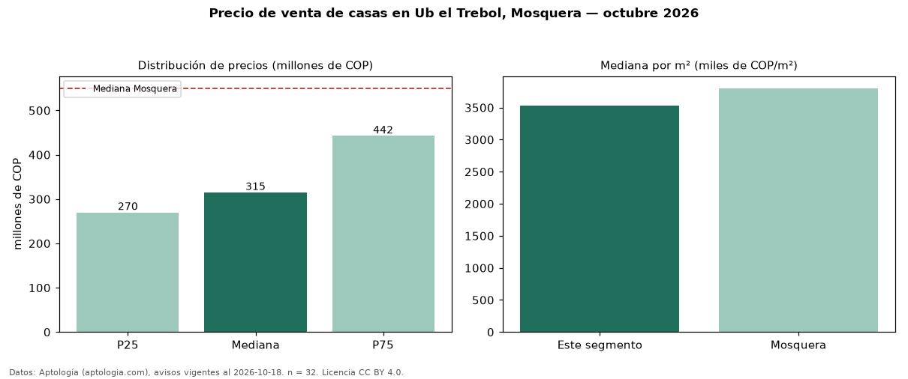

Precio de venta de casas en Ub el Trebol, Mosquera — octubre 2026
En Ub el Trebol, Mosquera, la mediana de precio de venta de casas es COP 315 millones, según 32 avisos vigentes. Frente a la mediana de Mosquera para casas (COP 550 millones), queda 43 % por debajo. Por metro cuadrado, la mediana es COP 3,53 millones/m² (n = 32 avisos con área), 7 % por debajo de Mosquera (COP 3,80 millones/m²). El área mediana anunciada es 94 m². El segmento con más oferta es el de 3 o más habitaciones (31 avisos, mediana COP 320 millones). La administración mediana declarada es COP 210.000 al mes (n = 19). El estrato más frecuente es 3 (74 % de los avisos con estrato). La mitad central de los avisos va de COP 270 millones a COP 442 millones (razón 1,6), una dispersión moderada. Datos: Aptología (aptologia.com), CC BY 4.0 — https://www.aptologia.com/casas-en-venta/mosquera/ub-el-trebol. Archivos: PDF, CSV con las cifras y gráfica PNG.

| Avisos únicos | 32 |
|---|---|
| Percentil 25 | COP 270.000.000 |
| Mediana | COP 315.000.000 |
| Percentil 75 | COP 442.500.000 |
| Mediana por m² | COP 3.529.589 |
Fuente: avisos vigentes de portales inmobiliarios recopilados por Aptología, deduplicados (mínimo 30 avisos únicos por celda). Precios pedidos, no cerrados. Fecha: 2026-10-18.